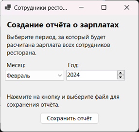
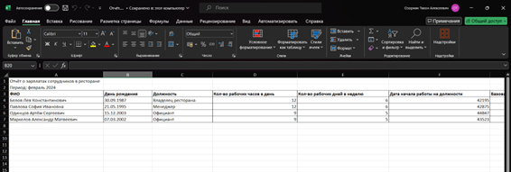

При нажатии на кнопку «Отчёт о зарплатах» в главном меню приложения открывается окно с параметрами для вывода отчёта о зарплатах всех сотрудников за определённый месяц во внешний файл Microsoft Excel (рис. 1).

Рисунок 1 - Форма вывода отчёта о зарплатах
При нажатии на кнопку «Сохранить отчёт» появится окно, в котором нужно выбрать место для сохранения файла. После выбора места появится сообщение, что отчёт был успешно сохранён по этому пути (рис. 2).

Рисунок 2 - Пример вывода отчёта о зарплатах